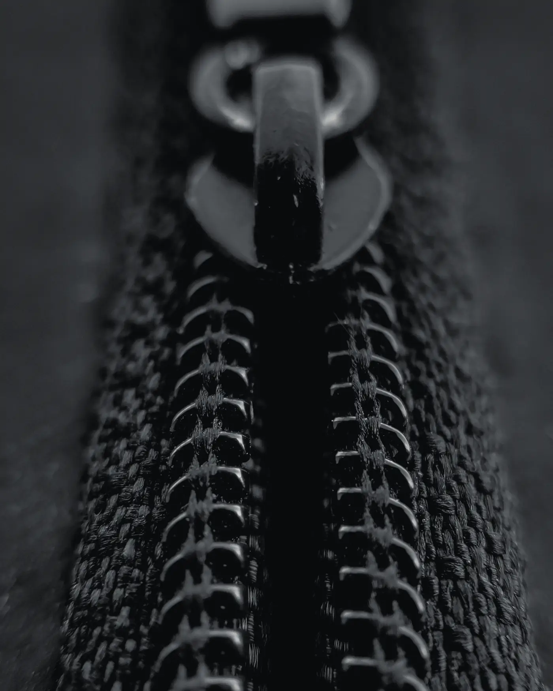
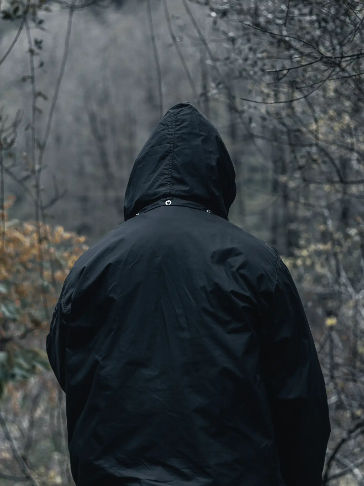
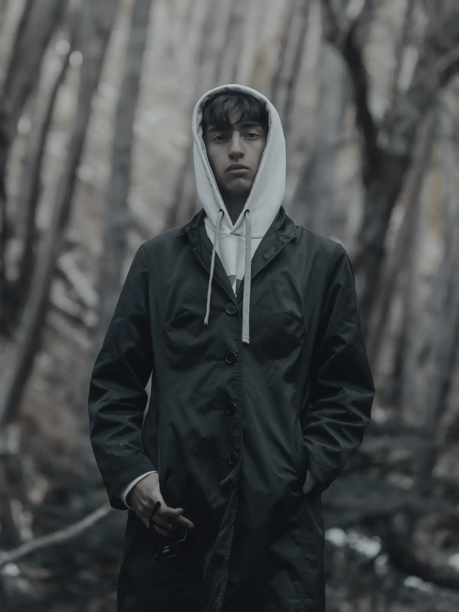
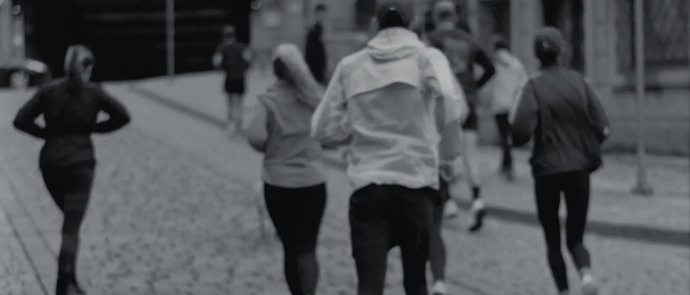
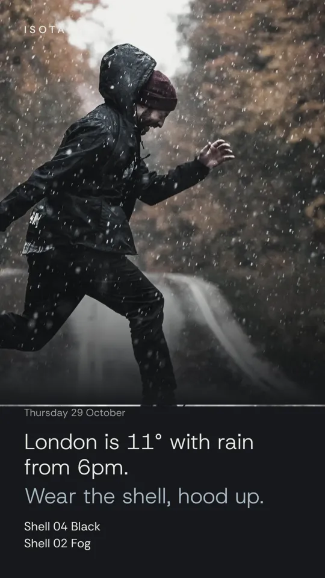

Isotach · Case study · Clothing brands
A running brand, drawn in wind.
Isotach is a fictional London maker of running shells. Its site does what a flagship store does, on a phone: the next drop to the second, a size from your height and weight, the run club in your calendar, and what to wear in today's rain.
02 Fit and fabric
A size from what you already know.
Height, weight, and the size you wear in brands that run small or large. It answers with one size and why, read only from the brand's own chart. Then every shell on the page turns to that size, its flat measurements beside it.
On Plus and Signature
03 What's left

Every size, as the stockroom counts it.
Each shell says what's left in every size, from a Google Sheet the brand edits on its phone. Sold out, a few left in M and L, opens Saturday at ten.
If the sheet hasn't been touched for longer than the brand sets, the numbers go quiet rather than show old stock. Sold out? "Tell me when it's back" goes to the brand's own Google Form.
Stock on every piece: Starter
The size run, emptying on drop day: Signature
04 The lookbook


The season, set as a book.
The campaign turns spread by spread, with a contact sheet to jump between looks. Tap a look to see each piece worn in it, its price and what's left.
Signature, with a page for every piece
05 Run club

Three runs a week, in your calendar.
Each run with its next date and where to meet. "I'm in" says so on WhatsApp; one tap puts the next run in your calendar. Routes are drawn from the club's own GPS points, with the real distance, as a picture to share.
The week's runs on the home page: Starter
The club page and calendar: Plus
Route cards: Signature
06 · 07 · 08 Drop day, the weather, the story
The line at the door.
The number being served, from a sheet the staff update at the door. Type your ticket to see how many are ahead. Only on drop day, and never an old number.
Signature
What to wear today.
The brand's city right now in one sentence, answered with its own pieces for rain, wind, cold or a mild day.
Signature add-on
The live forecast needs the brand's own paid weather plan, so it costs extra each month.

Today's kit, for stories.
The weather and the kit for it, drawn as a 9:16 picture with the brand's mark and saved to the phone, ready for a story.
Signature, with what to wear today
Light enough for a wet platform.
- Script
- 17.9 KB compressed, the whole site
- Styles
- 14.7 KB compressed
- First screen on a phone
- 159 KB of photographs the rest load as you reach them
- Lighthouse, phone
- Accessibility 100 · performance 88 to 98 across runs
- Layout shift
- 0.001 the clock ticks without moving the page
- Without JavaScript
- Every piece, its price and its size table are still there
Plans For a clothing brand
Starter
£99 then £25 a month
- Home and Plan your visit
- The drop line, its clock and the reminder list
- Every piece large, with stock in each size
- The close-ups, the club's week, questions
Plus
£199 then £30 a month
- Up to five pages
- The shop page, stock in every size
- Fit and fabric with the size finder
- The run club page and calendar
- Drops, the restock list and past campaigns
Signature
£349 then £35 a month
- Up to 20 pages, and something made for your brand alone
- The lookbook and a page for every piece
- The size run and the line at the door
- Route cards and today's kit card
- What to wear today, as a paid add-on
Twelve-month minimum. Any feature can be added to any plan on its own, and extra pages singly. Stock, the line and the reminder lists run on the brand's own Google Sheets and Forms, at no extra cost.